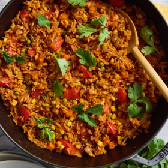

← All recipes
Mexican Rice

Servings: Yield: 6 servings · Prep: 10 minutes · Cook: 20 minutes
Ingredients
- 1 tablespoon olive oil
- 2 cloves garlic, minced
- 1 onion, diced
- 1 ½ cups basmati rice
- 1 (8-ounce) can tomato sauce
- 1 ½ cups chicken broth
- 1 cup corn kernels
- ½ cup diced carrots
- ½ cup frozen peas
- ¼ teaspoon chili powder
- ¼ teaspoon cumin
- Kosher salt and freshly ground black pepper, to taste
- 2 Roma tomatoes, diced
- 2 tablespoons chopped fresh cilantro leaves
Directions
- Heat olive oil in a large cast iron skillet over medium heat. Add garlic and onion, and cook, stirring frequently, until onions have become translucent, about 2-3 minutes.
- Stir in rice until toasted, about 2 minutes.
- Stir in tomato sauce and vegetable broth, and bring to a simmer, about 2 minutes.
- Stir in corn, carrots, peas, chili powder and cumin; season with salt and pepper, to taste. Bring to a boil; cover, reduce heat and simmer until rice is cooked through, about 13-16 minutes.
- Stir in tomatoes until heated through, about 1-2 minutes.
- Serve immediately, garnished with cilantro, if desired.
Original source: damndelicious.net